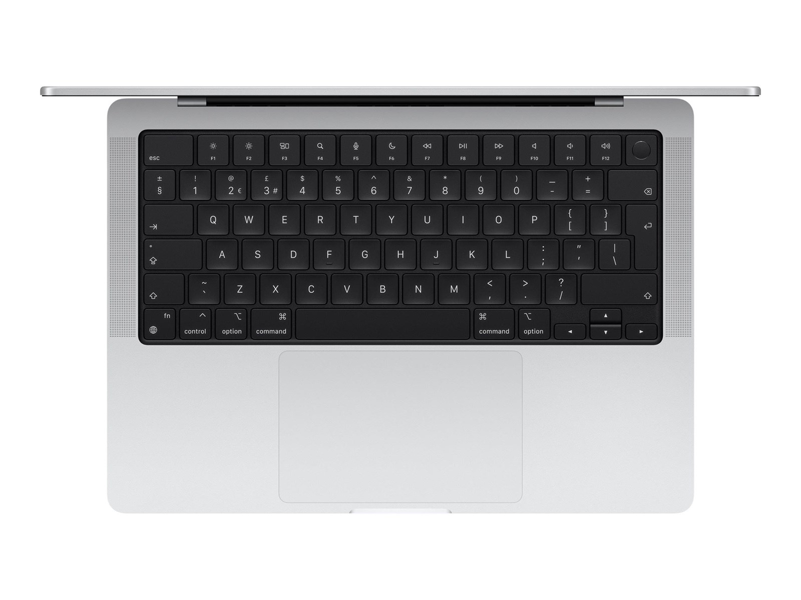

Min computer
Type
Min computer er en Apple MacBook Pro fra 2024
Specifikationer
Helt specifikt er min computer en Apple Macbook pro - 14.2" | M4 Pro | 24GB | 512GB | Silver 14" MacBook Pro med M4-chippen giver en spektakulær ydeevne i en bærbar computer pakket med power. Den har op til 24 timers batteritid og en imponerende Liquid Retina XDR-skærm med en lysstyrke på op til 1600 nits er den Pro fra inderst til yderst. Exceptionel ydeevne med 10-core CPU, 10-core GPU og 24GB RAM. Den har realistiske farver og ekstreme detaljer med Retina XDR-skærm og op til 24 timers batterilevetid for længere brugstid.